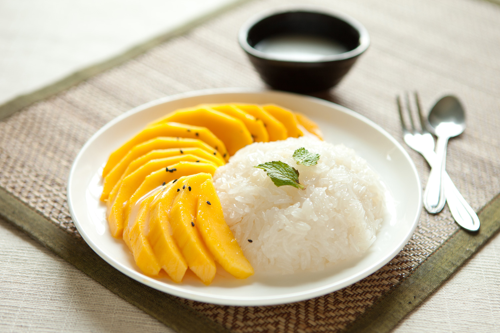
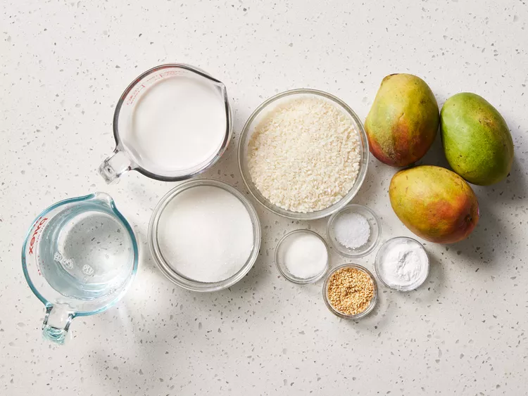
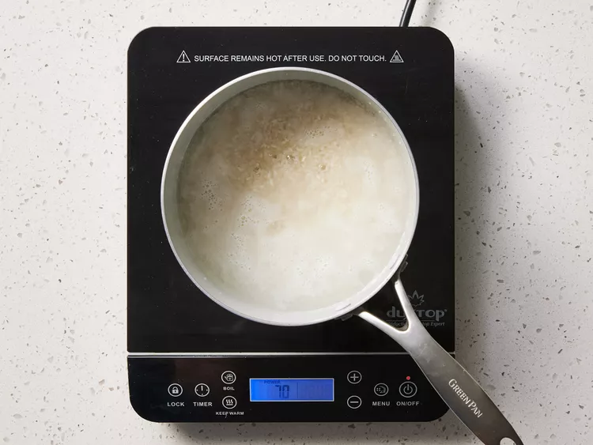
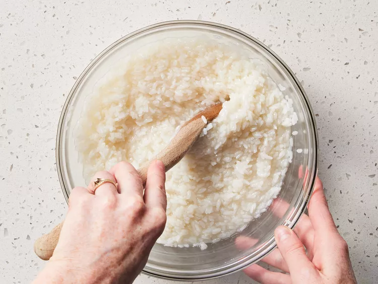
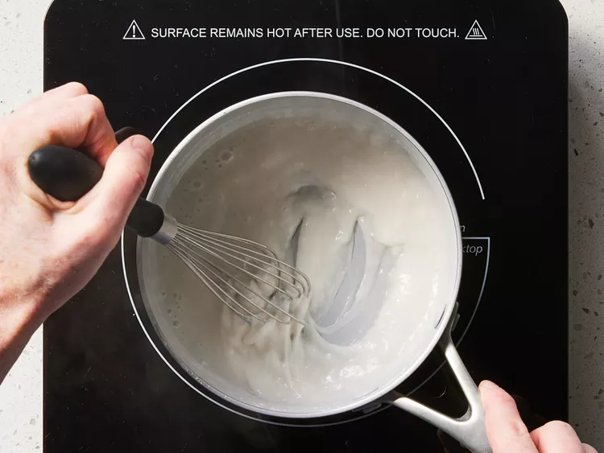
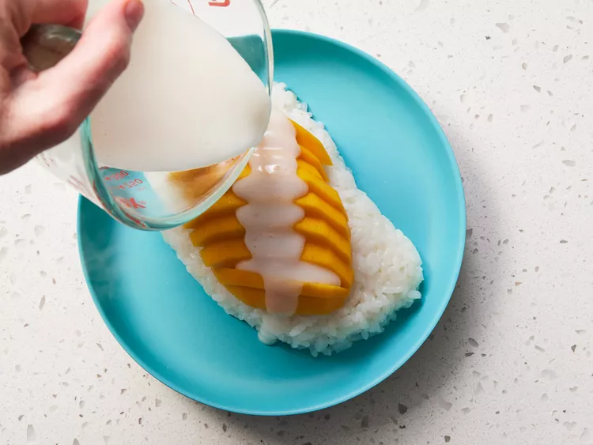
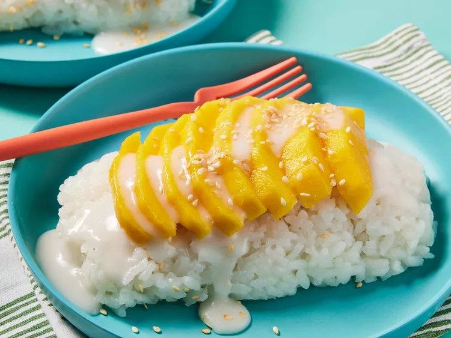

Gather all ingredients.

Combine water and rice in a saucepan. Bring to a boil, cover, and reduce heat to low. Simmer until water is absorbed, 15 to 20 minutes.

While the rice is cooking, combine 1 ½ cups coconut milk, 1 cup sugar, and 1/2 teaspoon salt in another saucepan. Bring to a boil over medium heat; remove from the heat and set aside.
Stir cooked rice into coconut milk mixture. Cover and allow to cool for 1 hour.

Make a sauce by combining 1/2 cup coconut milk, 1 tablespoon sugar, 1/4 teaspoon salt, and tapioca starch in another saucepan; bring to a boil. Cook and stir just until thickened.

Place coconut rice on a serving dish and arrange mangos on top. Pour sauce over mangos and rice.

Sprinkle with sesame seeds.
